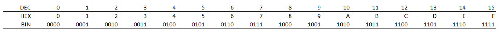
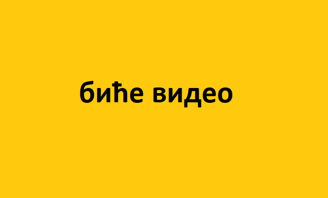

Представљање бројева и рачунање са различитим основама¶
Подсетимо се на почетку, ове табеле са претходног часа:

У првих осам колона налазе се цифре бинарних бројева, а у последњој колони су декадни бројеви. Да бисмо лакше објаснили поступак претварања између различитих система и рачунање у различитим системима, уведимо најпре договор, да се поред броја, у „индексу” у загради пише основа бројевног система у којем је број записан, јер, на пример ако само напишемо 10 то је у декадном систему десет, а у бинарном два.
На пример, број 5 бисмо записали овако:
Претварање бројева из једне у другу основу
Да ли се сећаш из основне школе како се „претварају” бројеви из једног система у други?
Пре свега, потребно нам је дељење са остатком (зове се још и целобројно дељење):
7:2 је 3 и остатак је 1
То се може записати и овако:
7:2=3(1)
Хајде мало да то најпре провежбаш:
овде пар тест-задатака на допуњавање
Поступак претварања декадног у бинарни број може се описати овако:
Подели декадни број са 2, запиши количник и остатак
Подели количник са 2, запиши нови количник и остатак
Подели количник са 2, запиши нови количник и остатак
…
Овај поступак се понавља док количник не буде нула, а онда од остатака, пишући их од последњег до првог формирати бинарни број.
Пример:
53:2=26 остаје 1
26:2=13 остаје 0
13:2=6 остаје 1
6:2=3 остаје 0
3:2=1 остаје 1
1:2=0 остаје 1
Из бинарног у декадни претвара се тако што разложимо број као у претходној лекцији:
Обрати пажњу да су степени двојке: 1, 2, 4, 8, 16, 32, 64, 128, 256, 512, 1024… Ови се бројеви често срећу, није лоше да запамтиш овај низ.
Раније смо у тексту споменули да се октални и хексадекадни користе јер се лако преводе у бинарни и обратно, а човеку је лакше да барата краћим бројевима у којима се појављује више различитих цифара него са огромним низовима нула и јединица.
Ево примера како се лако врши превођење између бинарног и хексадекадног. Пошто је потребно 16 цифара, уводе се и нека слова:
Погледај пример (бинарне ћемо писати у групама по четири цифре, ради лакше читљивости):
\(97_{(10)}=61_{(16)}=0110\) \(0001_{(2)}\)
\(13046_{(10)}=32F6_{(16)}=0011\) \(0010\) \(1111\) \(0110_{(2)}\)
Да ли уочаваш законитост?

{kind=link}
Покушај да преведеш ове бројеве у задате системе: неколико тест-примера декадни, бинарни, хексадекадни
Рачунске операције са бинарним бројевима
Као и са декадним бројевима и са бинарним се могу вршити рачунске операције:
Сабирамо и одузимамо потписивањем:
Код сабирања декадних бројева знамо да кад добијемо збир одговарајућих цифара већи или једнак 10 (што је основа декадног система), записујемо цифру коју добијамо када од добијеног збира одузмемо 10 (основу), а 1 „памтимо” и додајемо првом следећем пару цифара (лево од текућих).
Код одузимања са потписивањем ”позајмимо” од цифре која је за једну месну вредност више (лево) од цифара које одузимамо. Цифру од које позајмљујемо умањујемо за 1, а ону којој позајмљујемо увећавамо за 10 (што је основа декадног бројевног система).
Сабирање и одузимање у осталим бројевним системима се врше на исти начин, с тим што, ако код сабирања има пребацивања (ако је добијени збир цифара већи или једнак основи), записујемо број који добијамо када од добијеног збира одузмемо основу (2, односно 10(2) кад је реч о бинарним бројевима), а 1 пребацујемо на следећу позицију. Код одузимања се позајмљивање врши тако што се од цифре веће месне вредности позајмљује основа (2 односно 10(2) кад је реч о бинарним бројевима) и додаје се цифри од које тренутно одузимамо. Цифра од које смо позајмили се умањује за 1. Заправо, поступак је у било ком бројном систему практично исти, пребацујемо кад збир буде 10 и више, само водимо рачуна да останемо у дозвољеном скупу цифара! Пробајте!
{kind=link}
садржај видеа: - Операције сабирања и одузимања одузимање бинарних бројева
Код сабирања имамо 1 + 1 = 0, а 1 памтимо (пребацујемо). Наравно, да је 1 + 0 = 1 и 0 + 0 = 0.
Код одузимања је 1 – 0 = 1, 1 – 1 = 0 и 0 - 0 = 0 али се ситуација компликује ако наиђемо на 0 – 1.
Од прве следеће цифре позајмљујемо 1, а како је у овом примеру та цифра 0, не можемо да позајмимо од ње, већ идемо до следеће јединице. Када смо извршили то позајмљивање, вредност на оном месту са кога смо први пут хтели да позајмимо је 2. Сада одатле позајмљујемо 1, тако да на оном месту где нисмо могли да извршимо одузимање сада добијамо 2 – 1, а то је 1.
Овај поступак настављамо док не завршимо тражено одузимање.
Ако сте били успешни у сабирању и одузимању, пробајте множење и дељење! Забавно је - исти је поступак али мораш да мислиш које су дозвољене цифре у одабраном систему!
Задатак:Бинарни и декадни бројеви
Задатак:претварање бинарних у декадне бројеве